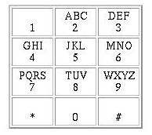

The marketing research group of the S&TC (String & Tin
Can) telephone company recently concluded its analysis of
leading-edge services that could be developed for its CENTREX
(business user) customers. The analysis showed that ``Named
Extension Dialing'' (NED) has the highest profit potential. To
maximize profit by minimizing non-recurring expenses, S&TC
has contracted your team to develop a module for the automated
attendant system that implements NED.
Currently when a call is placed to a business' primary number,
the caller is greeted with the pleasant, and almost human,
message ``You have reached XYZ Corporation. If you know your
party's extension, please dial it now, or stay on the line for an
operator.'' NED will allow the sentence, ``If you know your
party's name, dial the first letter of the first name followed by
the first letters of the last name of your party now,'' to be
added to the message.
Input to your software module will be a directory of names and
extensions, one per line, followed by lines containing arbitrary
numeric strings dialed by people calling XYZ Corporation. These strings
will have more than 1 digit. Each
directory entry consists of a first name, one space, a last name,
one space, and a 4-digit phone extension. Names can contain any
combination of up to twenty lower and upper case letters. No
input line will exceed 80 characters.
For each dialed number, the program is to output, on one line
starting in the first column, the list of extensions to which the
number could be referring. If the dialed number exactly matches
an extension, output the extension; otherwise,
output the list of extensions that correspond with names that match the
dialed number, the numbers should be output in the same order as they
appeared in the input.
Multiple extensions that match a dialed number are to be
separated from each other by single spaces. The dialed number
must match the characters in the name exactly. (Homophonic
matching of names was already completed in an earlier contest.)
If the input fails to match any names or extensions, output `0'.

Barry Charles 4384
John Smith 2315
Susan Small 5764
Alexis Baxter 4652
Kim Rohde 6678
22
5764
2345
22298
4384 4652
5764
0
4652
Miguel Revilla
2004-09-16